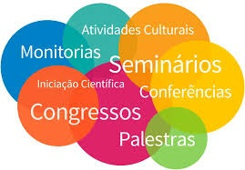

Projetos de Voluntariado: Envolva-se em atividades que fazem a diferença na
comunidade. Participe!
Essas atividades visam complementar a formação dos alunos, desenvolvendo habilidades sociais e de
trabalho em equipe.

Sobre a Etec Taboão
A Etec Taboão é uma instituição de ensino que oferece cursos técnicos de alta qualidade e formação
acadêmica. A escola é reconhecida por sua excelência e compromisso com a educação, preparando os alunos
para o
mercado de trabalho.
Alunos Deryck de Lucca e Luana de Jesus, com a professora Alícia Stefany da Silva. Premiação da
OBT!